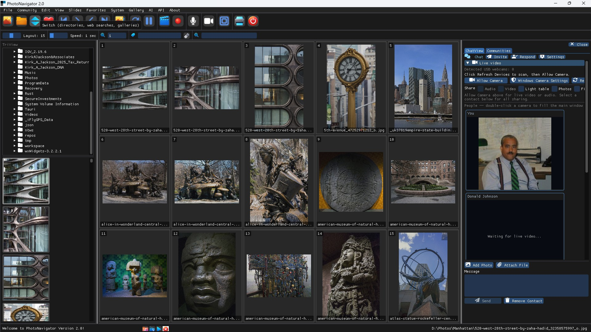

Screenshot

Windows photo viewer & image browser
Looking for a photoviewer / photo viewer for Windows that shows more than one image at a time? PhotoNavigator is a multi-panel photo browser for people who need to browse photos fast, run a slideshow, open RAW, and share without leaving the app.
- Browse photos in multi-panel layouts (2–36 panels)
- Photo viewer with zoom, pan, free rotation, and compare modes
- Slideshow — 200 transitions, second display / HDMI, folder music
- Image browser for folders, archives, HEIC, AVIF, and camera RAW (LibRaw)
- Download: PhotoNavigator-Setup.exe
- Author: github.com/jacksonkirka
Source code is private. This public repository and site host installers and product pages only.
Install
- Download
PhotoNavigator-Setup.exefrom GitHub Releases. - Run the 64-bit Windows installer.
- Optional: check Install Ollama for free local Photo Chat.
Links
Related searches
Windows photo viewer · photoviewer · browse photos · image browser · image viewer · multi-panel photo viewer · digital light table · photo slideshow Windows · RAW photo viewer · HEIC viewer · IrfanView alternative · FastStone alternative · XnView alternative · Microsoft Photos alternative · free photo viewer download · jacksonkirka